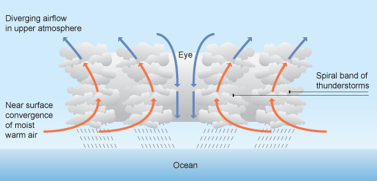
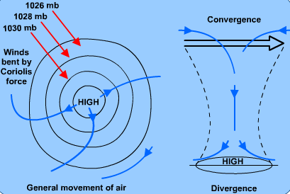

Hurricanes in the Atlantic Ocean
The main question that I have is what has been going on in the Atlantic Ocean for the past decades? I have worked with hurricane data before by building models that predict trajectories of hurricanes all over the world. In this project I would like to visualize trajectories in the Atlantic Ocean alongside with analysis of weather conditions. I’m interested in this geographic area compared to the entire world as it is much closer to the US life.
Release Reports
Alpha Release Report

Beta Release Update
Final Presentation
Objective
First things first:
Tropical cyclone is a rapidly rotating storm system characterized by a low-pressure center, a closed low-level atmospheric circulation, strong winds, and a spiral arrangement of thunderstorms that produce
heavy rain and/or squalls.
[wiki]
An Atlantic hurricane or tropical storm is a tropical cyclone that forms in the Atlantic Ocean, primarily between the months of June and November. A hurricane
differs from a cyclone or typhoon only on the basis of location.
-
Classifications:
- TD – Tropical cyclone of tropical depression intensity (less than 34 knots)
- TS – Tropical cyclone of tropical storm intensity (34-63 knots)
- HU – Tropical cyclone of hurricane intensity (> 64 knots). Let's foocus on this one for the prrorject.
- EX – Extratropical cyclone (of any intensity)
- SD – Subtropical cyclone of subtropical depression intensity ( less than 34 knots)
- SS – Subtropical cyclone of subtropical storm intensity (> 34 knots)
- LO – A low that is neither a tropical cyclone, a subtropical cyclone, nor an extratropical cyclone (of any intensity)
- WV – Tropical Wave (of any intensity)
- DB – Disturbance (of any intensity)
By working with tropical cyclones dataset I want to show changes for the last several decades that are happening in the Atlantic Ocean. Mostly I’m going to focus on hurricanes.
- How the amount of tropical cyclones changed from one season to another in the time period of several last decades. After that I am going to analyze several components of each tropical cyclone in the specified time frame.
- How many types of tropical cyclones are there?
- How did the maximum wind speed change in the time period?
- How did the pressure change in the time period? Next interesting part that I want to address is the length of the tropical cyclone and its trajectory.
- How tropical cyclones’ length have changed for several decades.
- What are the trajectories of tropical cyclones in the specified time frame?
Data
Main dataset is https://www.kaggle.com/noaa/hurricane-database
Overview and Saffir–Simpson Scale
As it is stated a mature tropical cyclone is a thermal engine whose heat source is the condensation of water vapour.
This is not the result, as has long been believed, of the presence of large-scale thunderstorm instability. The tropical oceanic atmosphere is generally close to neutrality, which does not allow the development of large-scale upward
movements. A very large part of the energy of cyclones comes from evaporation at the ocean surface, forced by winds of increasing intensity.
 link
According to NOAA the Atlantic hurricane season runs from June 1 to November 30. The Atlantic basin includes the Atlantic Ocean, Caribbean Sea, and Gulf of Mexico. Based on a 30-year climate period from 1991 to 2020, an average Atlantic hurricane season has 14 named storms, 7 hurricanes, and 3 major hurricanes (Category 3, 4, or 5 on the Saffir-Simpson Hurricane Wind Scale). The first named storm typically forms in mid to late June, the first hurricane tends to form in early to mid-August, and the first major hurricane forms in late August or early September.
The Saffir–Simpson hurricane wind scale, classifies hurricanes: Western Hemisphere tropical cyclones that exceed the intensities of tropical depressions and tropical storms – into five categories distinguished by the intensities of their sustained winds. [wiki]
Here is a combination of with definitions of the Saffir–Simpson hurricane wind scale, Tropical Storm and Tropical Depression to give the whole picture of wind speed ranges.
Storms in Atlantic Ocean
According to NOAA a tropical cyclone is a rotating, organized system of clouds and thunderstorms that originates over tropical or subtropical waters and has a closed low-level circulation. Tropical cyclones rotate counterclockwise in the Northern Hemisphere. They are classified as follows:
- Tropical Depression: A tropical cyclone with maximum sustained winds of 38 mph (33 knots) or less.
- Tropical Storm: A tropical cyclone with maximum sustained winds of 39 to 73 mph (34 to 63 knots).
- Hurricane: A tropical cyclone with maximum sustained winds of 74 mph (64 knots) or higher.
- Major Hurricane: A tropical cyclone with maximum sustained winds of 111 mph (96 knots) or higher, corresponding to a Category 3, 4 or 5 on the Saffir-Simpson Hurricane Wind Scale (shown above).
Most of the weather systems have several categories as they develope from one type to another over the time. Here are 2 charts that show what are the highest types of weather systems were recorded over a period of time from 1851 to 2015 years.
Total amount of storms by type based on the highest wind speed recorded.
Total amount of storms by type based on weather system condition.
Storms by Type per Decade
Now we can compare storm amount per decade to see any potential changes in the storm data. As done above, there are two ways too look at the data: in terms of high wind speed or in terms of other conditions apart from wind speed which is not the main factor. Mostly second chart is showing alternative way of looking at weather systems compared to the first chart.
It is possible to change ranges to compare data for the 5 consequent decades.
Categories included: Tropical depression, Tropical storm, Hurricane, Subtropical depression, Subtropical storm
1856-1865 1966-1975 + 4 Following Decades
-
Categories explained:
- Extratropical cyclone (of any intensity)
- A low that is neither a tropical cyclone, a subtropical cyclone, nor an extratropical cyclone (of any intensity)
- Tropical Wave (of any intensity)
- Disturbance (of any intensity)
1856-1865 1966-1975 + 4 Following Decades
Wind
Maximum Wind Speed (kn)
1950 2011 + 4 Following Years
Pressure
Tropical storms are areas of low pressure, that's why it is important to look into it. This image is showing the pressure aspect of the storm: 
{kind=link}
Minimum pressure registered in millibars.
1950 2011 + 4 Following Years
Weather System Trajectories
Atlantic Ocean map shows trajectories of weather systems including tropical storms, tropical depressions, hurricanes, etc.
1851 2015
Interactive map of Hurricanes
As it was mentioned above not every weatherr system turns into hurricane, so here gathered only hurricanes.
1851 2015